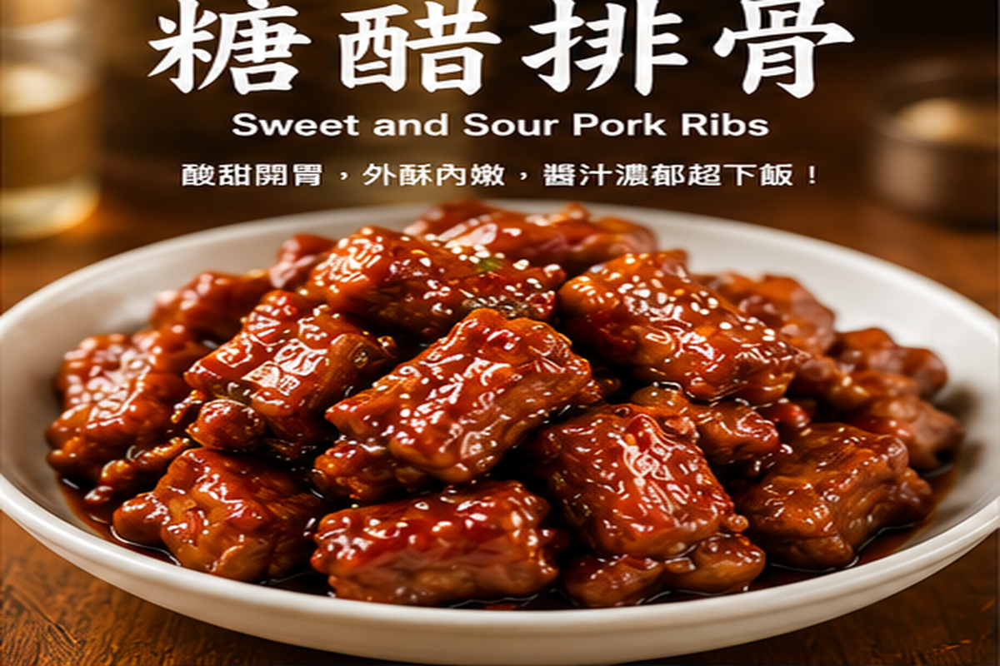
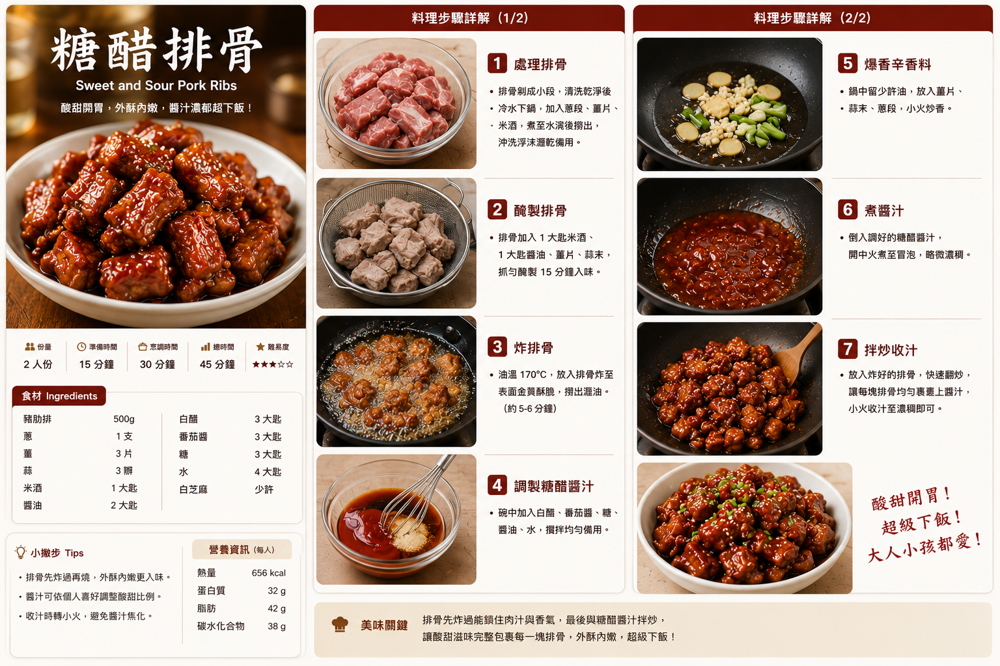

糖醋排骨
酸甜開胃的經典家常菜，排骨先煎至表面金香，再以米醋與砂糖調出亮澤酸甜醬汁，肉香濃郁、下飯不膩。
食譜指南
點擊可放大檢視 🔍
料理步驟
共 7 步01
豬肋排冷水下鍋，煮至水滾後再汆燙約 2 分鐘，撈出沖洗並瀝乾。
02
薑切片、大蒜切末、青蔥切段；將料理酒、醬油、米醋與砂糖先量好備用。
03
炒鍋加入沙拉油，中火放入排骨，煎至表面均勻金黃並帶焦香。
04
放入薑片與大蒜翻炒約 30 秒，接著加入料理酒去腥提香。
05
加入醬油與約 250 ml 水，蓋鍋以中小火燉煮約 20 分鐘，讓排骨變嫩。
06
加入砂糖與米醋，開蓋轉中火翻拌，讓醬汁逐漸濃縮並包覆排骨。
07
煮至醬汁呈亮澤濃稠狀，加入青蔥拌勻；如需更濃稠，可用少量馬鈴薯澱粉加水調勻後加入，煮至回濃即可。